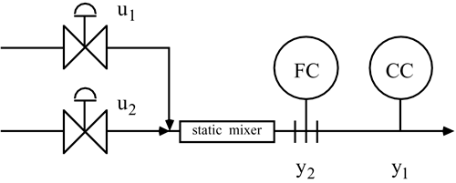
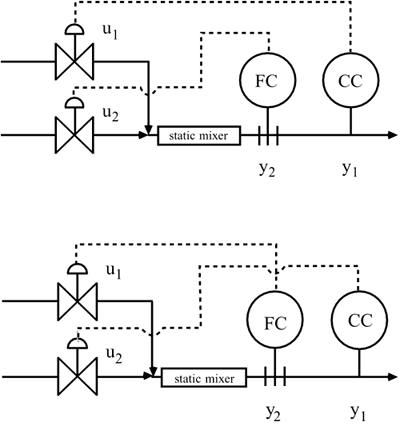
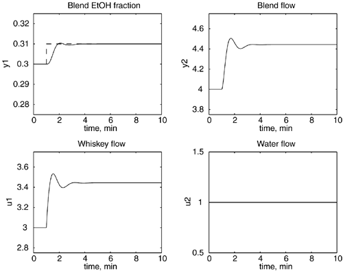
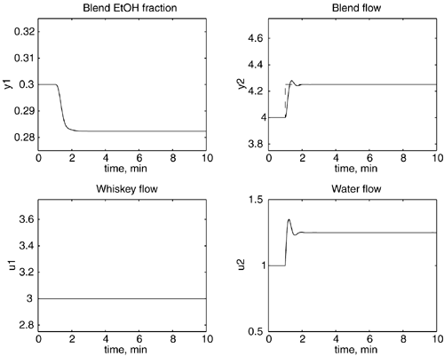
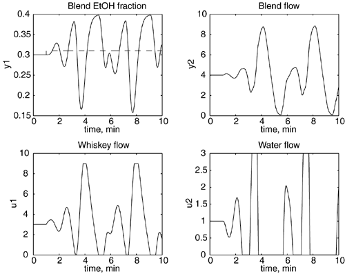

| [ Team LiB ] |
|
13.2 MotivationA specific example of a multivariable control problem is shown in Figure 13-2. Here, two different streams are blended together. The objective is to manipulate the individual stream flow rates to meet specifications on the output flow rate and the output composition. Let the outputs be represented by y2 (total flow) and y1 (composition), and the inputs by u1 (flow rate of stream 1) and u2 (flow rate of stream 2). How should our outputs and inputs be paired? If we assume that the output-input pairings are y1-u1 and y2-u2, the instrumentation diagram is shown in Figure 13-3a. If we assume that the output-input pairings are y1-u2 and y2-u1, the instrumentation diagram is shown in Figure 13-3b. Figure 13-2. Blending system. Figure 13-3. Blending system alternative closed-loop pairings. (a) u1-y1, u2-y2 pairing. (b) u1-y2, u2-y1 pairing. We can see potential problems in the operation of the control strategy in either Figure 13-3a or b. For discussion purposes, consider Figure 13-3a. A setpoint change in output 1 (y1, concentration) will cause the flow controller to change input 1 (u1, stream 1 flow). The change in input 1 will also affect output 2 (y2, total flow). Once output 2 is disturbed, the flow controller will cause a change in input 2. Input 2 will disturb the concentration, causing the concentration controller to change input 1, and we are back to where we started. The effect of one control loop on the other is referred to as control loop interaction. Although it is natural to think of these interactions as occurring in a sequential fashion, they actually happen simultaneously. Example 13.1: Whiskey BlendingConsider now a very specific problem to see whether physical intuition can be used to determine the proper pairing. Assume that an enterprising control student has decided that there is a profit to be made by blending a stream of 80 proof (40% ethanol) whiskey with pure water to produce a product stream that is 60 proof (30% ethanol). Assume that it is important to meet both quality and production-rate requirements, and that you can measure the alcohol content and total flow rate accurately. Assume that the 80 proof stream flow rate is the first manipulated input (u1) and that the dilution water flow rate is the second manipulated input (u2). The blended product flow rate is output 2 and the blend composition is output 1. Your intuition is probably to pair output 1 (alcohol measurement) with input 1 (80 proof whiskey stream), since there is no alcohol in the water stream; this is the strategy shown in Figure 13-3a. We find later that this is not the best pairing, indicating that the best control structure is often counterintuitive. We first see the problem by observing the behavior of control loop 1 (y1-u1 pairing) when control loop 2 (y2-u2 pairing) is open (or under "manual" control). The response to an ethanol concentration setpoint change is shown in Figure 13-4. Observe that the closed-loop behavior of ethanol concentration is quite good, but that the total flow rate deviates, since the flow control loop (control loop 2) is not closed. Figure 13-4. Response to an ethanol setpoint change; loop 1 has ethanol concentration as the measured output (y1) and whiskey flow rate as the manipulated input (u1). Loop 2 is open. Assume that it is desirable to maintain the total blend rate at a constant value. This requires that loop 2 be closed. Loop 2 has blend flow as the measured process output (y2) and the dilution water flow rate as the manipulated input (u2). Assume that it has been tuned independently from loop 1, that is, loop 1 is open. The response to a setpoint change in flow rate is shown in Figure 13-5. Notice that the flow-rate response is quite good but that the ethanol concentration deviates from the desired value, because loop 1 is open. Figure 13-5. Response to total blend flow rate setpoint change; loop 2 has blend flow rate as the measured output (y2) and dilution water flow rate as the manipulated input (u2). Loop 1 is open. We have seen that the individual control loops have quite good performance. Since we desire to control both the concentration and the flow rate of the blend stream, we need to have both loops closed simultaneously. The response to a setpoint change in the total blend flow rate with both loops closed is shown in Figure 13-6. Notice that closed-loop system is now unstable! What characteristic of this control strategy caused the instability to occur when both loops were closed? Would this behavior have occurred if a different variable pairing had been used? That is, would there be problems if loop 1 paired the ethanol measurement (y1) with dilution water flow (u2) and loop 2 paired the total blend flow rate (y2) with the whiskey flow (u1)? We find the answer to this question in the sections that follow. Figure 13-6. Response to a total blend flow rate setpoint change with both loops closed. Loop 2 pairs blend flow rate (y2) and dilution water flow rate (u2), while loop 1 pairs ethanol concentration (y1) with whiskey flow (u1). |
| [ Team LiB ] |
|